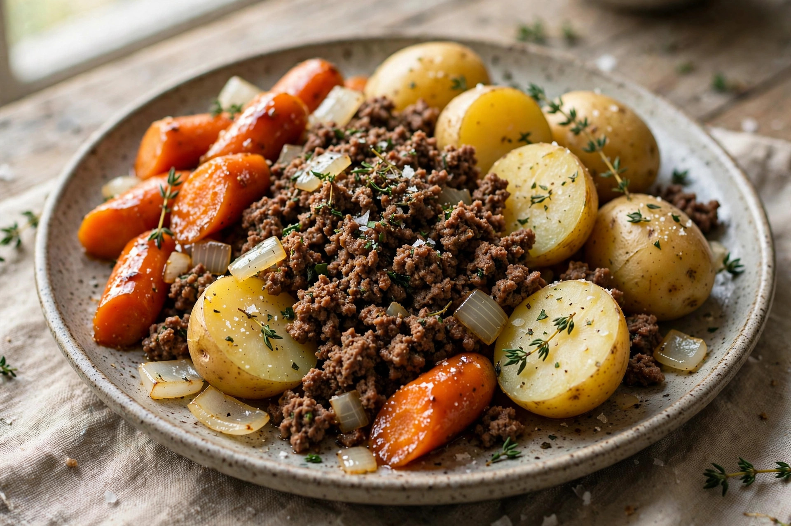

RONBO FIT · Recipes · Ground beef with potato and carrot
Ground beef with potato and carrot
Carne molida con papa y zanahoria

Illustrative photo of the finished dish · Foto ilustrativa del plato terminado
546KCAL
42.7 gPROTEIN
39.6 gCARBS
23.4 gFAT
25 min · 1 serving · Macros calculated from USDA data · Sugar 5.9 g
Ingredients
- 150 g Ground beef 85 % lean
- 150 g Potato, boiled
- 60 g Carrot
- 40 g Onion
Ingredientes
- 150 g Carne molida de res 85 %
- 150 g Papa hervida
- 60 g Zanahoria
- 40 g Cebolla
Preparation
- Brown the ground beef in a large skillet, breaking up the lumps.
- Add the onion, potato and carrot cubes with a cup of water.
- Cover and cook over medium heat for 15 minutes, until the potato is tender.
Preparación
- Dora la carne molida en una sartén grande, deshaciendo los grumos.
- Añade la cebolla, la papa y la zanahoria en cubos con un vaso de agua.
- Tapa y cocina a fuego medio 15 minutos, hasta que la papa esté tierna.
Get this recipe in the app
This recipe lives in the RONBO FIT recipe book — drop it into your weekly menu and the app does the math for your goals. · Esta receta vive en el recetario de RONBO FIT.